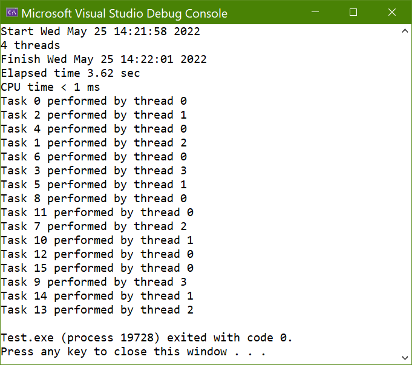

This is a sample test program for threadplusplus. As described in Section 4 of the threadplusplus documentation, it consists of a task descriptor CTask derived from CBaseTask, a thread manager CThreadManager derived from CBaseThreadManager<CTask>, and a main() function in Main.cpp which does the following.
- Create a thread manager and a timer, that is, an instance of
CThreadManager and an instance of CTimer.
- Add some task descriptors to the task manager. These are instances of
CTask that describe a task that involves sleeping for a certain amount of time.
- Start the timer.
- Report current data and time, and the number of available threads to the console (for example, the first 2 lines of Fig. 1).
- Spawn the threads and wait for them to terminate.
- Use the timer to report current time, elapsed time, and CPU time to the console (for example, lines 3-5 of Fig. 1).
- Have the thread manager process the results. A list of task identifiers and the thread identifier of the thread that processed them is reported to the console (for example, lines 6-21 of Fig. 1).
- Clean up and exit.

Fig. 1: Screen shot of a test run using 4 concurrent threads.